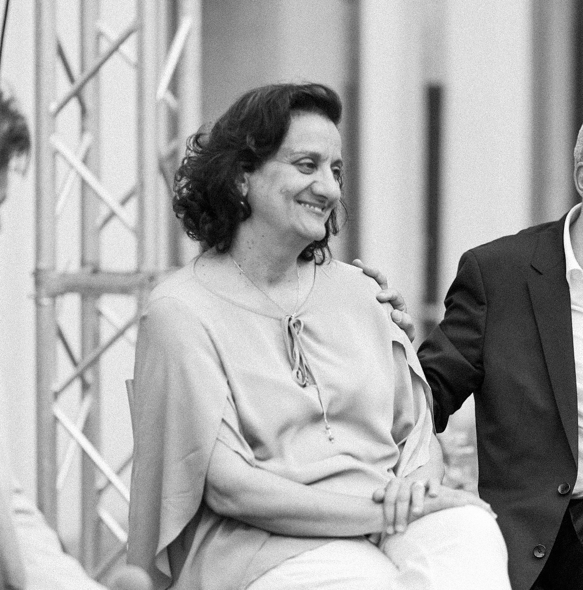
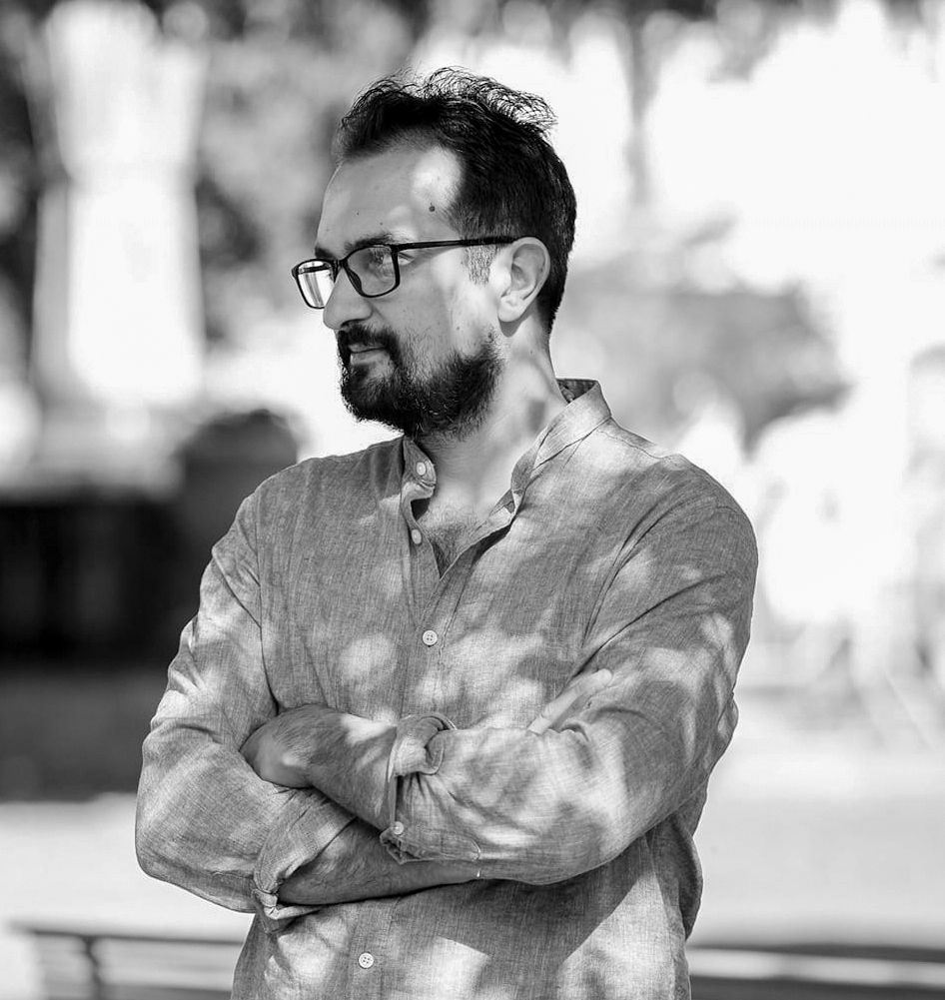
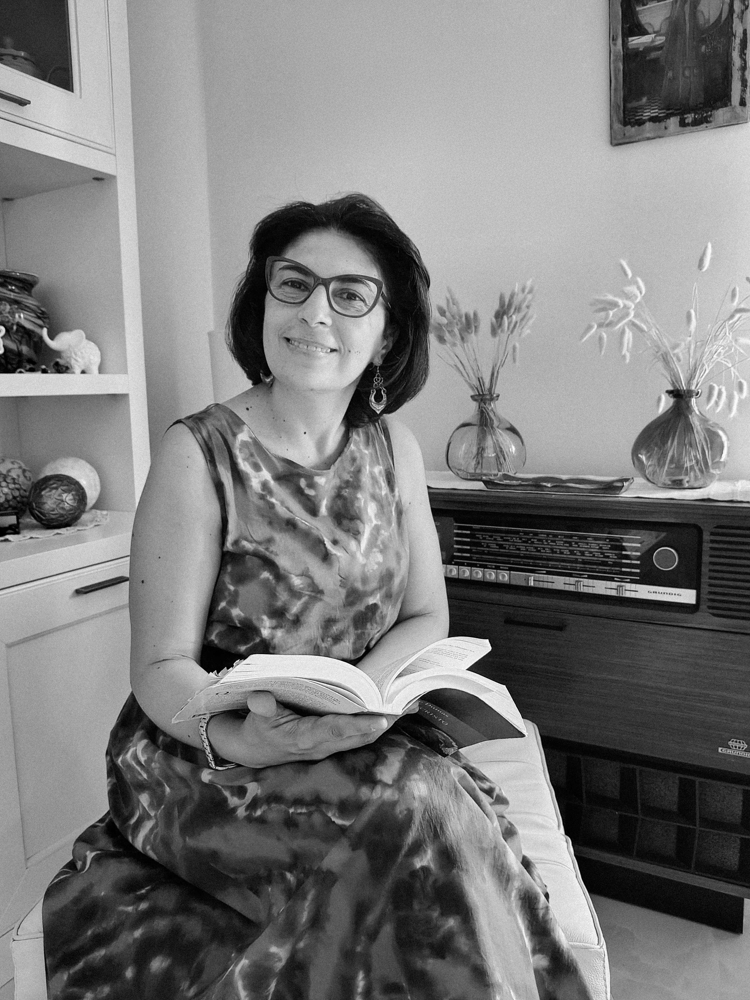
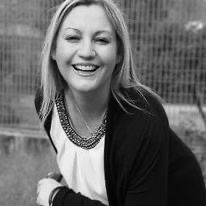
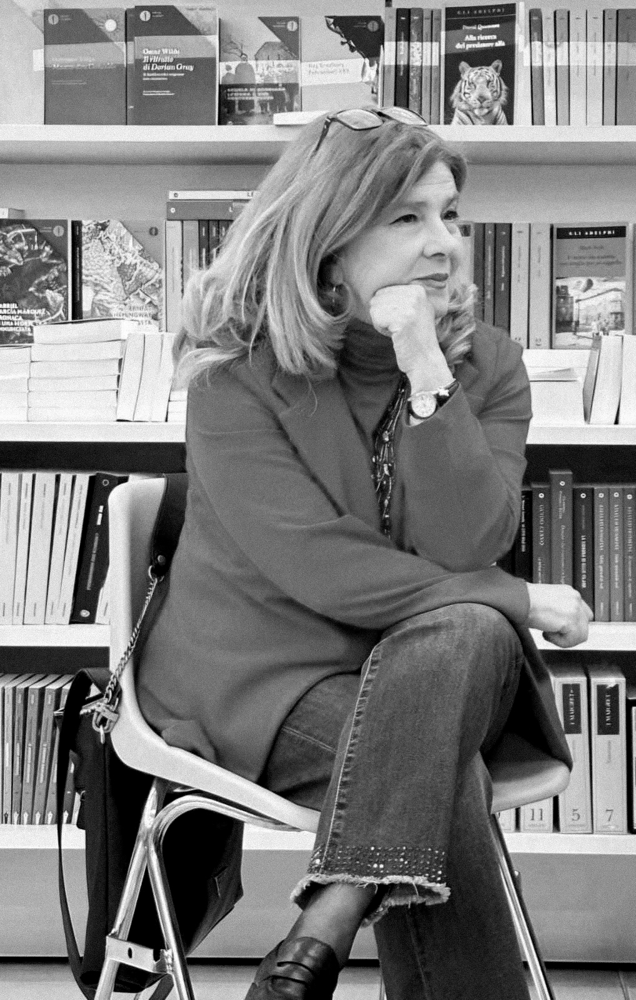
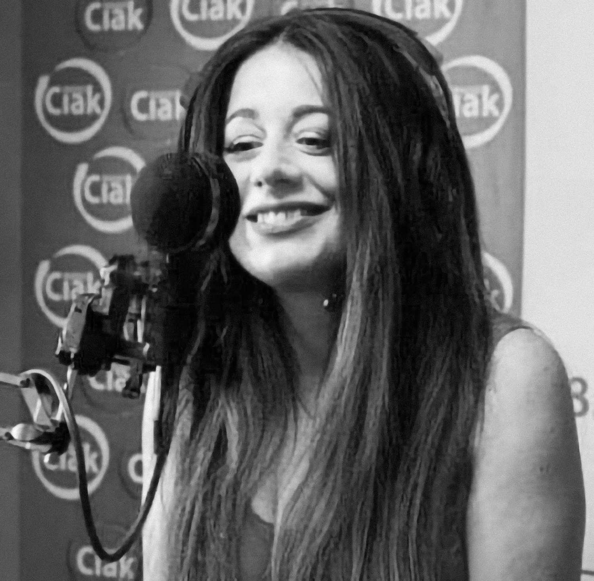
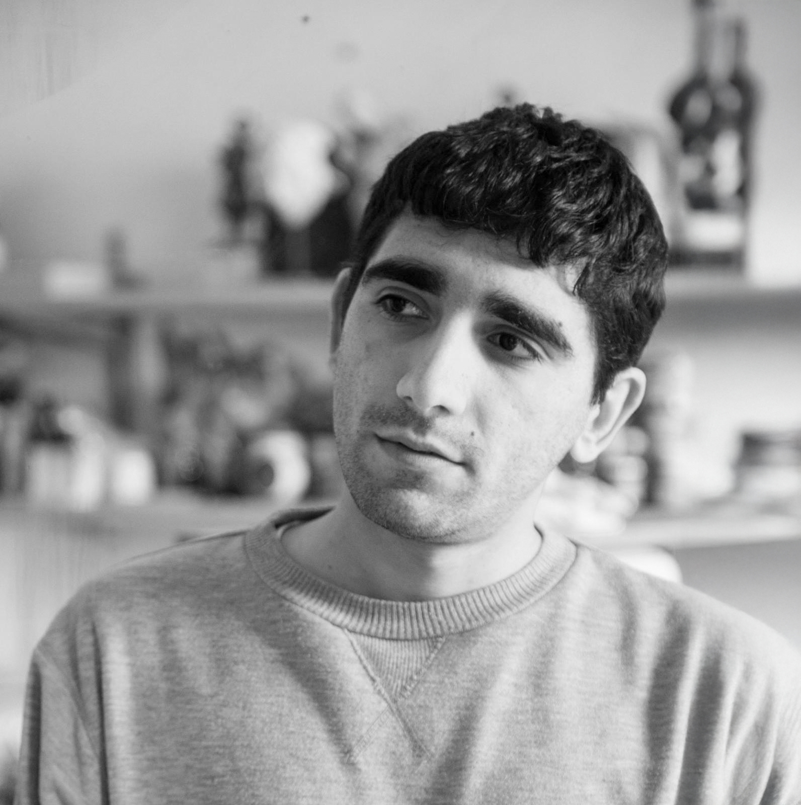

Vinicio Leonetti
Presidente di Giuria
Premio Kerasion
Miriam Rocca
Direttrice Culturale
Premio Kerasion

Stefania Mancuso
Docente
Premio Kerasion
Gianfranco Cefalì
Redattore e Scrittore
Premio Kerasion

Domenico B. D'Agostino
Bibliotecario e Scrittore
Premio Kerasion
Franco Zaffino
Responsabile Sezione Saggio
Premio Kerasion

Miriam Guzzi
Docente
Premio Kerasion

Livia Blasi
Presidente di Giuria fino al 2022
Premio Kerasion
Simona Dalla Chiesa
Responsabile Premio C. A. Dalla Chiesa
Premio Kerasion
Pasquale Allegro
Scrittore
Premio Kerasion
Simona Barberio
Poetessa
Premio Kerasion

Daniela Grandinetti
Docente e Scrittrice
Premio Kerasion

Elisa Chiriano
Insegnante, Speaker e Blogger
Premio Kerasion

Salvatore Di Spena
Poeta e Scrittore
Premio Kerasion